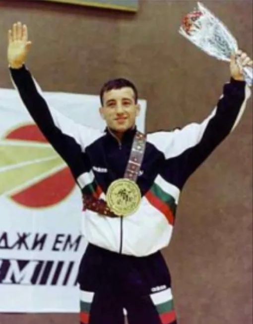

B246 · Speed and Power Workout with the Bulgarian Bag
Hi {first_name},
Less than a year ago, I was on a training trip to Boise, Idaho working with one of my mentors - founder of the Bulgarian Bag, Ivan Ivanov.
Ivan was the former US Olympic Greco-Roman Wrestling Coach and an Olympian for Bulgaria. Ivan has a wealth of knowledge and experience working with combat athletes of all types and it's been an absolute pleasure working closely with him these past few years.

One of the videos we shot, was just released and I wanted to share it with you here. Also, while the title of the Youtube video is "How to Design Speed and Power Training for Wresting", it will be a great fit for any functional athlete.
What you’ll see is a four exercise circuit of the following exercises and repetitions.
Click here to access the workout.
The idea is to knock all the reps out as quickly as possible with good technique. One thing to note is that you’ll want to ensure you have good technical proficiency on the movements before trying to increase the speed of each.
I hope you enjoy this workout!
P.S. I'd like to extend an invitation to you to see if you're the right fit for a select few spots for free 20 minute Zoom peak performance session. This call is mainly for those seeking to regain or improve the strength and control of their body in a graceful way. The goal of this call is to walk you through a process of digging into where are the main bottlenecks in your health and performance, co-creating a plan to elevate your game, and determine what actions need to happen immediately if you are to truly realize your peak potential. Click here to learn more and apply. |